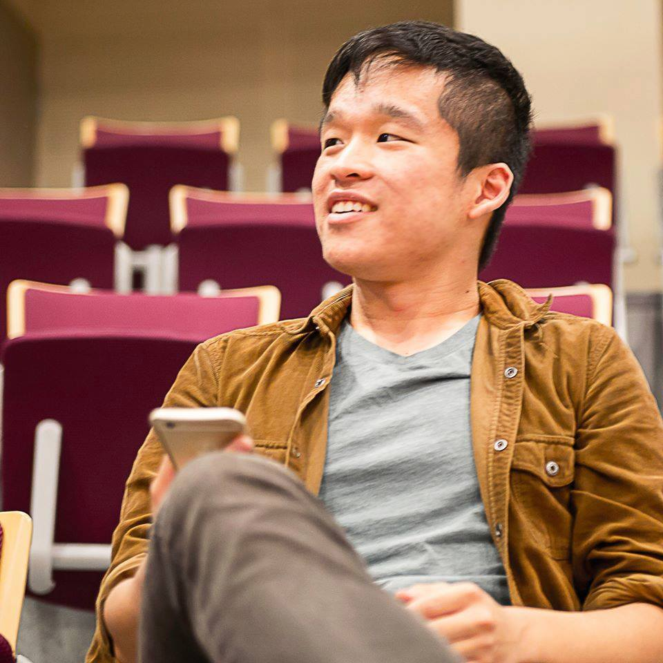

{% include JB/setup %}

<div id="index-page">

	

	<div id="index-content">
 
		<p id="index-content-1"><b> This is my personal website. I am currently woking as a research assistant in the Department of Computer Science and Information Engineering, National Taiwan University (NTU). I work with <a href="https://www.csie.ntu.edu.tw/people/bio.php?PID=50">Professor Hao-Hua Chu</a> in the <a href='http://mll.csie.ntu.edu.tw'>UbiComp Lab Group</a>.</b></p>

		<p>Many thanks for your visit to the website!</p>

		<p>My name is Yu-Lun Tsai. I m currently applying to the master program in EE/ECE/CS. I received my bachelor degree from department of Electrical Engineering, NTU. I graduated at about 15% among students and received <b>Hung-Lin Wu scholarship</b> in 2011. I have published two conference papers in my senior year and the RA working period. The third conference paper is under reviewed currently. My research interest are <b>ubiquitous computing, embedded system, distributed system</b> and <b>sensor network</b>. With solid training I have received, I an prepared to advance related field and explore new areas.</p>

		<p>I will be glad to answer any questions you may have about my experiences and interests. Please send me an e-mail to this address <a href='mailto:stormysun513@gmail.com'>stormysun513@gmail.com</a>. I will reply as soon as possible. Thank you again!</p>

	</div>

</div>